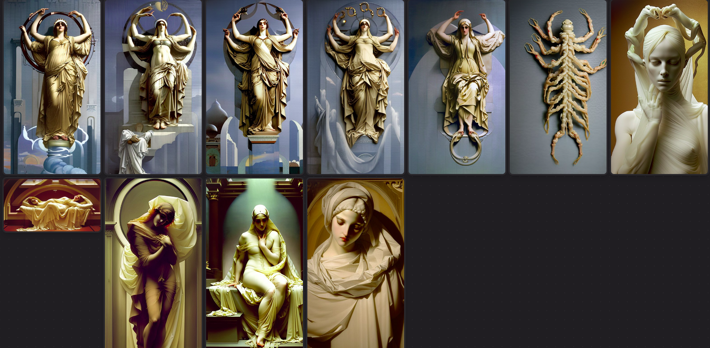

It's Sunday. I opened Bitwig and connected my Push 2. At the same time, I started playing with a new fine-tuning of a machine learning model for image generation (called Luna Diffusion, based on SD1.5). Fine-tuning is the process of taking an artificial neural network and giving it a more specific direction by adding layers at the end of the network. This allows it to "learn" new concepts or reinforce specific ones: lobotomize, indoctrinate, correct a trend, suggest new paths (in order)."
Buttery smooth interpolation
I was generating images, which involved writing more or less short sentences (prompts) and composing small arrangements, around a minute and a half or so. That duration is basically my comfort zone for the sound aspect currently. When I started, it was more like ten seconds. I'm not the type of person who writes long prompts; I prefer to use loaded words, repetitions, incoherences, and see how the model hallucinates.
prompting progression
At the same time:
cyclical, the veiled head of the divine being, by Frederick Leighton
cyclical time, the completely veiled VEILED being, cyclical, by Frederick Leighton
cyclical time, the completely veiled VEILED being with four arms and eight arms, cyclical, by Frederick Leighton
completely veiled VEILED being with four arms and eight arms, cyclical
completely veiled VEILED four arms and eight arms, cyclical
completely veiled being with four arms and eight arms, cyclical, by Frederick Leighton
completely veiled being with four arms and eight arms, cyclical, sun and moon, by Frederick Leighton
images progression
At the same time:
I knew this model was fine-tuned to create "ethereal" images, so I wanted to see how it handled Leighton. I quickly got bored with the hegemonic nature of the result and ended up thinking about ways to produce the errors I like the most: too many arms, joints bent in ways they shouldn't be, circular symmetries, religious icons.
Final selection of images:

Process:
sounds progression
At the same time:
I enjoy feeling the noise blowing into my ear.
With my headphones, it becomes intimate.
ts
ts
ts
The word doesn't fully form, either there's a lack of signal or there's an excess of information. In communication, the zero has flipped itself around.
I feel it this way. I break it down in layers, stacking filters and modifiers on top of digital instruments, seeing what emerges.
I've also been thinking about what breaks apart and what is assembled among the broken. I mean, I've been doing that this month and about ten years ago. The image I envision is the jungle growing amidst the ruins of the cathedral. I imagine multiple arms moving between my sheets and on top of the experimentation table.
I started the assembly based on a study I had done a few months ago on the sonority of Arca in her self-titled album. It goes as follows:
I removed the instruments that I no longer liked and began breaking the remaining ones by shifting my focus to different parts of the image.
The chest.
The fingers and the arms.
The breasts.
The head.
And now, in retrospect, thinking about what I did, it's impossible not to see it as a kiss.